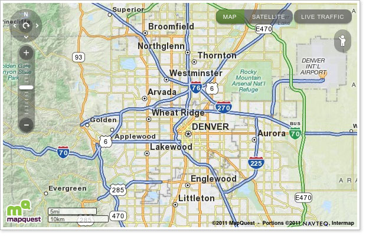
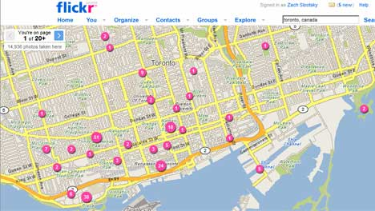
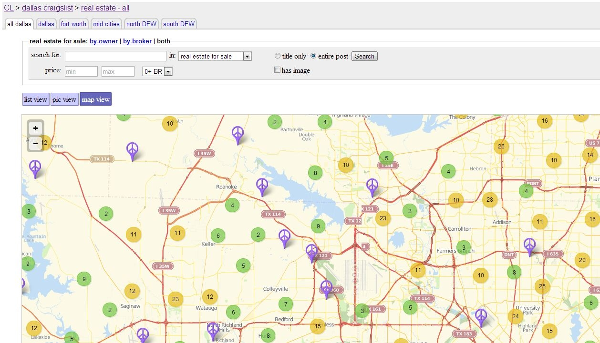

Introduction To OpenStreetMap
The free and seamless world map
Heavily Borrowed from @pdxmele's Awesome "Introduction to OpenStreetMap" workshop at State of the Map US 2014
What Is OpenStreetMap?
- Also Known As OSM
- Founded In 2004
- "Wikipedia Of Maps"
- Anyone With An Account Can Edit
What Isn't OpenStreetMap?
- Proprietary - Only Caveat: Must Provide Attribution (Share Alike)
- Static
- Controlled By An Authoritative Body
What Is OpenStreetMap? For Real This Time!
A Gigantic XML Database - 36gb To Be Exact
Defined By Elements And....
- Nodes (Points)
- Ways (Lines)
- Areas (Polygons)
- Relations (Groups)
...And By Tags
- highway = primary
- bridge = yes
- building = house
- leisure = pitch & sport = baseball (Baseball Diamond)
Who Is Using OSM?



There's A Ton Of Stuff
- Roads, highways, bridges, and tunnels
- Bus stops, bus routes, bike routes, and railways
- Businesses: shops, restaurants, bars
- Buildings: schools, churches, houses
- Parks, lakes, mountains, and even trees
- Airports, power networks, and mailboxes
- Administrative boundaries
- Full List Here
Editing In OSM-Sooooo Easy-
My 10 yr Old Does It!

2 Simple Steps
- Sign Up For An Account
- Start Editing
Edit With iD
There Are Others But iD Is Best For Beginners

Do The Walkthrough First

Start Local

Save Your Edits
- Save Often
- Save = Linked Changeset (Like A Commit)
- Include Source And Info About Your Edit
Further Reading
10th Anniversary Mapathon